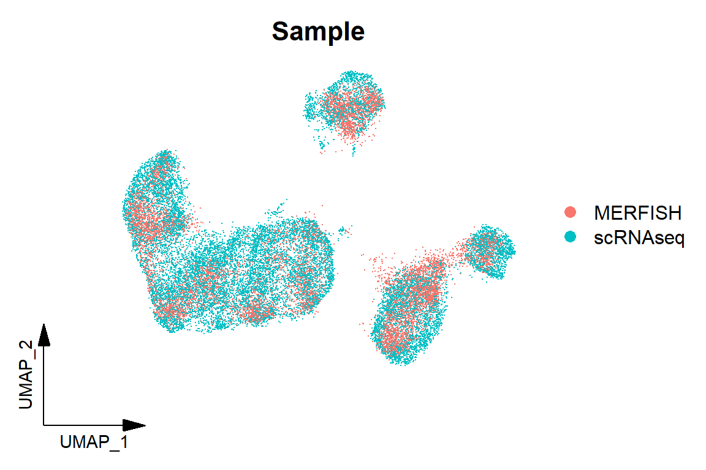

Code
library(Seurat)
library(tidyverse)
library(caret)
library(Matrix)
library(xgboost)
library(PRROC)
library(scCustomize)
library(cowplot)
library(ggpointdensity)
library(Biorplot)
source('bin/Palettes.R')
source('bin/includes.R')library(Seurat)
library(tidyverse)
library(caret)
library(Matrix)
library(xgboost)
library(PRROC)
library(scCustomize)
library(cowplot)
library(ggpointdensity)
library(Biorplot)
source('bin/Palettes.R')
source('bin/includes.R')Adult.Ex <- readRDS('../data/rds/Adult.Ex.rds')
sp.PFC <- readRDS('../data/rds/sp.PFC.rds')
PFC.MERFISH <- readRDS('../data/rds/PFC.MERFISH.rds')
seu.inte <- readRDS('../data/rds/PFC.MERFISH.inte.rds')Adult.IT.PT.barcode <- subset(Adult.Ex, cells=colnames(Adult.Ex)[which(
(Adult.Ex$BC_num>0 & Adult.Ex$Ex_subtype == "IT") |
(Adult.Ex$BC_num>0 & Adult.Ex$Ex_subtype == "PT" & Adult.Ex$sample == "Adult1")
)])
sp.PFC.Left <- subset(
sp.PFC,
cells = colnames(sp.PFC)[which(sp.PFC$ABA_hemisphere=="Left")])
sp.PFC.Left.ITPT.barcode <- subset(sp.PFC, cells = colnames(sp.PFC)[which(
sp.PFC$ABA_hemisphere=="Left" & sp.PFC$SubType_Layer %in% c("L2/3 IT","L4/5 IT","L5 IT","L6 IT", "L5 PT") & sp.PFC$BC_num>0)])sp_Barcode <- c('VIS-I','SSp-I','CP-I','AUD-I','RSP-I',
'BLA-I','ACB-I','AId-I','ECT-I',
'ACB-C','ECT-C',
'CP-C','AId-C','RSP-C',
'LHA-I')
sp_gene <- rownames(sp.PFC)
sc_seu <- Adult.IT.PT.barcode
sc_seu$BC_motif <- apply(sc_seu@meta.data[,sp_Barcode], 1, function(x){
paste(names(x)[which(x>0)], collapse = ',')
})
sc_motif <- unique(sc_seu$BC_motif)
sp_seu <- sp.PFC.Left.ITPT.barcode
sp_seu$BC_motif <- apply(sp_seu@meta.data[,sp_Barcode], 1, function(x){
paste(names(x)[which(x>0)], collapse = ',')
})
sp_motif <- unique(sp_seu$BC_motif)
sc_seu <- subset(sc_seu, cells=colnames(sc_seu)[which(sc_seu$BC_motif %in% sp_motif)])
sp_seu <- subset(sp_seu, cells=colnames(sp_seu)[which(sp_seu$BC_motif %in% sc_motif)])
#sc_mat <- cbind(t(as.matrix(sc_seu@assays$RNA@data[sp_gene,])),sc_seu@meta.data[,sp_Barcode])
sc_mat <- sc_seu@meta.data[,sp_Barcode]
sc_mat[is.na(sc_mat)] <- 0
#sp_mat <- cbind(t(as.matrix(sp_seu@assays$RNA@data[sp_gene,])),sp_seu@meta.data[,sp_Barcode])
sp_mat <- sp_seu@meta.data[,sp_Barcode]
merge_mat <- rbind(sc_mat,sp_mat)
cor_mat <- cor(t(merge_mat))
sc_seu$sc_cellid <- rownames(sc_seu@meta.data)
sp_cellid <-
apply(sc_seu@meta.data,1,function(x){
sc_cell <- x["sc_cellid"]
sp_cells <- colnames(sp_seu)[which(sp_seu$BC_motif==x["BC_motif"] &
sp_seu$SubType==x["SubType"])]
if (length(sp_cells)>1){
names(which.max(cor_mat[sc_cell,sp_cells]))
}else{
sp_cells
}
})
sp_cellid <- as.character(sp_cellid)
sc_seu$sp_cellid <- sp_cellid
sc_seu$ML_new <- as.numeric(sp_seu$ML_new[sc_seu$sp_cellid])
sc_seu$DV_new <- as.numeric(sp_seu$DV_new[sc_seu$sp_cellid])
sc_seu$AP_new <- as.numeric(sp_seu$AP_new[sc_seu$sp_cellid])seu <- sc_seu
transcriptom_mat <- seu@reductions$pca@cell.embeddings[,1:30]
spatial_mat <- seu@meta.data[,c("ML_new","DV_new","AP_new")]
colnames(spatial_mat) <- c("ML","DV","AP")
Barcode <- c('VIS-I','SSp-I','CP-I','AUD-I','RSP-I',
'BLA-I','ACB-I','ENTl-I','AId-I','ECT-I',
'ACB-C','PL-C','ECT-C','ENTl-C',
'BLA-C','CP-C','AId-C','RSP-C',
'MD-I','RE-I','DR-I','VTA-I','LHA-I','SC-I')
result_all <- data.frame()
for (i in 1:length(Barcode)){
proj_i <- Barcode[i]
y <- seu@meta.data[,proj_i]
y <- y[!is.na(seu@meta.data[,proj_i])]
y[which(y>0)] <- 1
trainIndex <- createDataPartition(y, p = .7, list = FALSE, times = 1)
y_train <- y[trainIndex]
y_test <- y[-trainIndex]
# transcriptom + spatial
X <- as.matrix(cbind(transcriptom_mat, spatial_mat))
X <- X[!is.na(seu@meta.data[,proj_i]),]
X_train <- Matrix(X[trainIndex,], sparse = T)
X_test <- Matrix(X[-trainIndex,], sparse = T)
dtrain <- xgb.DMatrix(data = X_train, label = y_train)
dtest <- xgb.DMatrix(data = X_test, label = y_test)
cv <- xgb.cv(data = dtrain, nrounds = 1000, nfold = 5, max_depth = 5, eta = 0.5,
early_stopping_rounds = 5, objective = "binary:logistic",
verbose = F)
model_xgb <- xgboost(data=dtrain, max_depth=5, eta=0.5, nthread = 5,
nround = cv$best_iteration, objective = "binary:logistic",
verbose = F)
pre <- predict(model_xgb, newdata = dtest)
#y_pre <- as.numeric(pre > 0.5)
#conf <- confusionMatrix(factor(y_pre, levels = c(0,1)),
# factor(y_test, levels = c(0,1)),
# mode = "everything", positive="1")
#Accuracy <- as.numeric(conf$overall["Accuracy"])
#F1 <- as.numeric(conf$byClass["F1"])
#PR <- pr.curve(scores.class0 = pre, weights.class0 = y_test, curve = TRUE)
ROC <- roc.curve(scores.class0 = pre, weights.class0 = y_test, curve = TRUE)
result1 <- data.frame('ROC_1'=ROC$curve[,1],
'ROC_2'=ROC$curve[,2],
'AUC'=ROC$auc,
'target'=proj_i,
'Experiment'="transcriptom + spatial"
)
# transcriptom
X <- as.matrix(transcriptom_mat)
X <- X[!is.na(seu@meta.data[,proj_i]),]
X_train <- Matrix(X[trainIndex,], sparse = T)
X_test <- Matrix(X[-trainIndex,], sparse = T)
dtrain <- xgb.DMatrix(data = X_train, label = y_train)
dtest <- xgb.DMatrix(data = X_test, label = y_test)
cv <- xgb.cv(data = dtrain, nrounds = 1000, nfold = 5, max_depth = 5, eta = 0.5,
early_stopping_rounds = 5, objective = "binary:logistic",
verbose = F)
model_xgb <- xgboost(data=dtrain, max_depth=5, eta=0.5, nthread = 5,
nround = cv$best_iteration, objective = 'binary:logistic',
verbose = F)
pre <- predict(model_xgb, newdata = dtest)
y_pre <- as.numeric(pre > 0.5)
conf <- confusionMatrix(factor(y_pre, levels = c(0,1)),
factor(y_test, levels = c(0,1)),
mode = "everything", positive="1")
Accuracy <- as.numeric(conf$overall["Accuracy"])
F1 <- as.numeric(conf$byClass["F1"])
ROC <- roc.curve(scores.class0 = pre, weights.class0 = y_test, curve = TRUE)
result2 <- data.frame('ROC_1'=ROC$curve[,1],
'ROC_2'=ROC$curve[,2],
'AUC'=ROC$auc,
'target'=proj_i,
'Experiment'="transcriptom"
)
# shuffle y
y_shuffle <- sample(y,length(y))
y_train <- y_shuffle[trainIndex]
y_test <- y_shuffle[-trainIndex]
X <- as.matrix(cbind(transcriptom_mat, spatial_mat))
X <- X[!is.na(seu@meta.data[,proj_i]),]
X_train <- Matrix(X[trainIndex,], sparse = T)
X_test <- Matrix(X[-trainIndex,], sparse = T)
dtrain <- xgb.DMatrix(data = X_train, label = y_train)
dtest <- xgb.DMatrix(data = X_test, label = y_test)
cv <- xgb.cv(data = dtrain, nrounds = 1000, nfold = 5, max_depth = 5, eta = 0.5,
early_stopping_rounds = 5, objective = "binary:logistic",
verbose = F)
model_xgb <- xgboost(data=dtrain, max_depth=5, eta=0.5, nthread = 5,
nround = cv$best_iteration, objective = 'binary:logistic',
verbose = F)
pre <- predict(model_xgb, newdata = dtest)
y_pre <- as.numeric(pre > 0.5)
conf <- confusionMatrix(factor(y_pre, levels = c(0,1)),
factor(y_test, levels = c(0,1)),
mode = "everything", positive="1")
Accuracy <- as.numeric(conf$overall["Accuracy"])
F1 <- as.numeric(conf$byClass["F1"])
ROC <- roc.curve(scores.class0 = pre, weights.class0 = y_test, curve = TRUE)
result3 <- data.frame('ROC_1'=ROC$curve[,1],
'ROC_2'=ROC$curve[,2],
'AUC'=ROC$auc,
'target'=proj_i,
'Experiment'="shuffle"
)
result <- rbind(result1, result2, result3)
result_all <- rbind(result_all, result)
}
#saveRDS(result_all,'../data/csv/ML/barcode.result_all.rds')Barcode <- c('VIS-I','SSp-I','CP-I','AUD-I','RSP-I',
'BLA-I','ACB-I','ENTl-I','AId-I','ECT-I',
'ACB-C','PL-C','ECT-C','ENTl-C',
'BLA-C','CP-C','AId-C','RSP-C',
'MD-I','RE-I','DR-I','VTA-I','LHA-I','SC-I')
result_all <- readRDS('../data/rds/ML/result_target.rds')
df <- result_all
df <- df[which(df$Experiment != "spatial"),]
df$target <- factor(df$target, levels = Barcode)
df$Experiment <- factor(
df$Experiment,
levels = c("transcriptom + spatial","transcriptom","shuffle"))
FigureS10_A <-
ggplot(df, aes(x=ROC_1, y=ROC_2, color=Experiment)) +
geom_line(linewidth=1) +
#geom_abline(slope = 1,intercept = 0,lty="dashed",color='gray') +
facet_wrap(~target, nrow = 4) +
theme_bw() +
theme(panel.grid=element_blank(),
panel.spacing = unit(1,"lines"),
plot.title = element_text(hjust = 0.5, face = "bold"),
legend.position = "top", legend.title = element_blank()) +
scale_color_manual(values = c("transcriptom + spatial"="#d73027",
"transcriptom"="#4575b4",
"spatial"="#ff7f0e",
"shuffle"="gray")) +
labs(x='False positive rate', y='Sensitivity',
title = "")
FigureS10_Aggsave("../pdf/FigureS10/FigureS10_A.pdf", plot = FigureS10_A,
height = 8, width = 10, units = "in")df <- df[which(df$Experiment != "shuffle"),]
unique(paste(df$target, df$AUC,df$Experiment)) [1] "VIS-I 0.881488663117901 transcriptom + spatial"
[2] "VIS-I 0.679628018540091 transcriptom"
[3] "SSp-I 0.889573309698658 transcriptom + spatial"
[4] "SSp-I 0.762996961256014 transcriptom"
[5] "CP-I 0.938402645992368 transcriptom + spatial"
[6] "CP-I 0.768775036641258 transcriptom"
[7] "AUD-I 0.925174825174825 transcriptom + spatial"
[8] "AUD-I 0.82711038961039 transcriptom"
[9] "RSP-I 0.906869983948636 transcriptom + spatial"
[10] "RSP-I 0.734608079186731 transcriptom"
[11] "BLA-I 0.890474823188055 transcriptom + spatial"
[12] "BLA-I 0.773131636744645 transcriptom"
[13] "ACB-I 0.944931942109034 transcriptom + spatial"
[14] "ACB-I 0.7891513828725 transcriptom"
[15] "ENTl-I 0.833408038248917 transcriptom + spatial"
[16] "ENTl-I 0.817958350230874 transcriptom"
[17] "AId-I 0.866658916531039 transcriptom + spatial"
[18] "AId-I 0.7286522514144 transcriptom"
[19] "ECT-I 0.834653875400576 transcriptom + spatial"
[20] "ECT-I 0.752600347618272 transcriptom"
[21] "ACB-C 0.8892592511239 transcriptom + spatial"
[22] "ACB-C 0.78734221470515 transcriptom"
[23] "PL-C 0.778075237072822 transcriptom + spatial"
[24] "PL-C 0.744822419037395 transcriptom"
[25] "ECT-C 0.82044866983571 transcriptom + spatial"
[26] "ECT-C 0.75640063380869 transcriptom"
[27] "ENTl-C 0.710758377425044 transcriptom + spatial"
[28] "ENTl-C 0.724162257495591 transcriptom"
[29] "BLA-C 0.622408293460925 transcriptom + spatial"
[30] "BLA-C 0.639314194577353 transcriptom"
[31] "CP-C 0.937142608342283 transcriptom + spatial"
[32] "CP-C 0.716493659891529 transcriptom"
[33] "AId-C 0.82741020975693 transcriptom + spatial"
[34] "AId-C 0.730626867250086 transcriptom"
[35] "RSP-C 0.813955342902711 transcriptom + spatial"
[36] "RSP-C 0.664234449760766 transcriptom"
[37] "MD-I 0.951476310368505 transcriptom + spatial"
[38] "MD-I 0.94850080109865 transcriptom"
[39] "RE-I 0.971658986175115 transcriptom + spatial"
[40] "RE-I 0.967914746543779 transcriptom"
[41] "DR-I 0.973177636234961 transcriptom + spatial"
[42] "DR-I 0.970753715498938 transcriptom"
[43] "VTA-I 0.971886936592819 transcriptom + spatial"
[44] "VTA-I 0.97868601986249 transcriptom"
[45] "LHA-I 0.98406424493381 transcriptom + spatial"
[46] "LHA-I 0.980660643704122 transcriptom"
[47] "SC-I 0.961650485436893 transcriptom + spatial"
[48] "SC-I 0.965169902912621 transcriptom" FigureS10_B <-
DimPlot_scCustom(seurat_object = seu.inte, group.by = "Sample", reduction = "umap", figure_plot = TRUE, colors_use = c("#f8766d", "#00bfc4"),pt.size = 0.1) +
coord_fixed()
FigureS10_B
ggsave("../pdf/FigureS10/FigureS10_B.pdf", plot = FigureS10_B,
height = 4, width = 6, units = "in")seu <- subset(seu.inte, cells=colnames(seu.inte)[which(seu.inte$Sample=="scRNAseq")])
colnames(seu@meta.data)[13:36] <- c(
"ACB-C","ACB-I","AId-C","AId-I","AUD-I","BLA-C","BLA-I","CP-C","CP-I","DR-I",
"ECT-C","ECT-I","ENTl-C","ENTl-I","LHA-I","MD-I","PL-C","RE-I","RSP-C","RSP-I",
"SC-I","SSp-I","VIS-I","VTA-I")
seu$first_target <- "none"
seu$first_target[which(seu$BC_num>0)] <- Barcode[apply(seu@meta.data[which(seu$BC_num>0),Barcode], 1, which.max)]
seu$first_target <- factor(seu$first_target, levels = c(Barcode,"none"))
FigureS10_C <-
DimPlot_scCustom(seurat_object = seu, group.by = "first_target", reduction = "umap",
colors_use = col_Barcode,
figure_plot = TRUE, pt.size = 0.1) +
coord_fixed()
FigureS10_Cggsave("../pdf/FigureS10/FigureS10_C.pdf", plot = FigureS10_C,
height = 4, width = 6, units = "in")seu <- subset(seu.inte, cells=colnames(seu.inte)[which(seu.inte$Sample=="MERFISH")])
FigureS10_D <-
DimPlot_scCustom(seurat_object = seu, group.by = "subcluster", reduction = "umap",
colors_use = scales::hue_pal()(18),
figure_plot = TRUE, pt.size = 0.1) +
coord_fixed()
FigureS10_Dggsave("../pdf/FigureS10/FigureS10_D.pdf", plot = FigureS10_D,
height = 6, width = 6, units = "in")See Figure7_G and Figure7_H